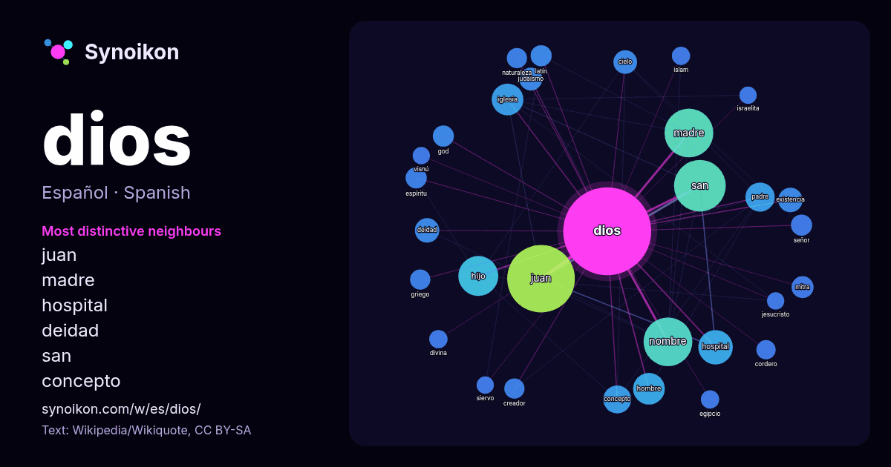

Español · palabra popular
dios
“god” · Las palabras encontradas a su alrededor en 1258 apariciones de Wikipedia, Wikiquote.

Vecinos más característicos
- juan 42×
- madre 35×
- hospital 23×
- deidad 16×
- san 15×
- concepto 15×
- judaísmo 14×
- mitra 14×
- hijo 14×
- cielo 13×
- nombre 13×
- god 13×
- existencia 12×
- creador 11×
- latín 11×
- cordero 11×
- espíritu 10×
- padre 10×
- hombre 10×
- iglesia 9.7×
× = cuántas veces más que en el texto general de Wikipedia.
Vecinos más frecuentes
- juan 123
- san 72
- madre 64
- nombre 64
- hijo 43
- hospital 32
- hombre 27
- iglesia 27
- padre 23
- concepto 21
- película 19
- ciudad 17
- deidad 16
- españa 16
- existencia 16
- cielo 15
- antiguo 14
- judaísmo 14
- reino 14
- título 14
En contexto
- El concepto teológico, filosófico y antropológico de Dios (del latín: Deus, que a su vez proviene de la raíz protoindoeuropea *deiwos~diewos, ‘brillo’ Wikipedia snippets · Dios
- mediterráneo este dios era denominado IL o EL, al dios supremo, padre de los hombres y de todas las criaturas. Los sumerios tenían un dios equivalente llamado Wikipedia snippets · El (dios semítico)
- En el Cristianismo, Dios es la entidad que creó y mantiene el Universo. Dios es trascendente —independiente y distinto del universo material— e interviene Wikipedia snippets · Dios en el cristianismo
- Las Asambleas de Dios (en inglés: Assemblies of God) o la Fraternidad Mundial de las Asambleas de Dios son una asociación cristiana evangélica internacional Wikipedia snippets · Asambleas de Dios
- En el marco del hinduismo, Suria es el dios del Sol. sūrya, en el sistema AITS (alfabeto internacional para la transliteración del sánscrito). सूर्य, Wikipedia snippets · Suria (dios)
- Hijo de Dios es el título de un líder y concepto religioso que refleja la fidelidad y aprobación de quien lo posee. Históricamente muchos gobernantes han Wikipedia snippets · Hijo de Dios
- Siervo de Dios (del latín: servare ‘tener, guardar, conservar’) es un término religioso para referirse a las personas que son muy allegadas y obedientes Wikipedia snippets · Siervo de Dios
- Voluntad de Dios o voluntad divina es un concepto teológico del cristianismo y las otras religiones abrahámicas (judaísmo e islam). La creencia en la existencia Wikipedia snippets · Voluntad de Dios
Más palabras
- agua
- arte
- bosque
- caballo
- camino
- campana
- canción
- ciencia
- ciudad
- clima
- comida
- corazón
- desierto
- dinero
- espejo
- estrella
- familia
- fuerza
- gato
- historia
- invierno
- isla
- jardín
- lengua
- lluvia
- madre
- mapa
- miel
- montaña
- muerte
- naturaleza
- oro
- otoño
- pan
- perro
- puente
- reloj
- sal
- salud
- silencio
- sombra
- tiempo
- tormenta
- trabajo
- tren
- té
- verano
- verdad
- vida
Precalculado el 2026-10-09 con los ajustes predeterminados (±5 palabras, corpus mediano). El mapa interactivo puede actualizarlo con datos en vivo.
Interfaz traducida automáticamente; se agradecen correcciones.